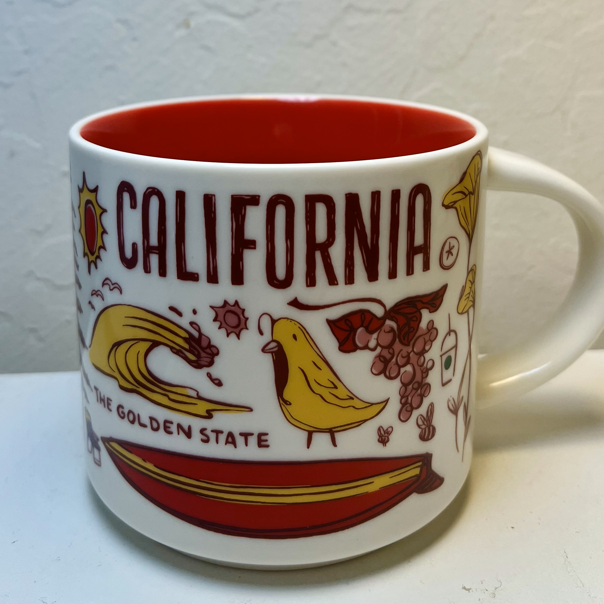

-

- California Mug Archive
- A mug that captures the coastal charms of California with its iconic landmarks in yellow and red on the white background.
{kind=link}
- California Mug Archive
- A mug that captures the coastal charms of California with its iconic landmarks in yellow and red on the white background.
Narrative
<<<<<<< HEADThe Starbucks "Been There" series features ceramic mugs adorned with intricate designs, capturing the essence of different global destinations. The details of this series can be found at the bottom of the mug, with information on its manufacturer and other properties. With textual and visual representations, the Starbucks California mug presents the captivating sceneries of the state.
It includes typical features in California, including the natural wonders such as the palm tree, ocean waves, wine grapes, and the sunset splendor, and the cultural activities represented by the surfboard, sunglasses, sailboat, Hollywood camera, and the wine under the sun umbrella with the “Malibu” sign. The icons in a yellow and red palette of the overall design illustrate a relaxed and healthy outdoor beach vibe in California, with its creative cultural diversity in artistic innovations.
The textual components of the mug offer the most straightforward information of the piece. In the forefront of the mug, the capitalized words “CALIFORNIA” and “THE GOLDEN STATE” in stylish fonts convey the emblematic significance. In the backend, the Bear Flag is displayed at the bottom left as an identification of the state. Right by the handle of the mug appears the “STARBUCKS” logo.
All the elements together tell the story of California with enriched historical, natural, and cultural contexts. The vibrant color embodies the adventurous and passionate spirit of the state with its artistic taste. The mug, therefore, transcends the original function and enables viewers to embark on a visual journey to the Golden State.